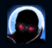
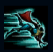
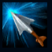
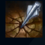
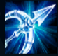

Vayne
| Vayne The Night Hunter | |
|---|---|
| Release date | 10.05.2011 |
| Class | Marksman |
| Positions | Top,Bottom |
| Resource | Mana |
| Range type | Ranged |
| Adaptive type | Physical |
| Base statistics | |||
| Health | 515 – 2028 | Mana | 231.8 – 826.8 |
| Health regen. | 3.5 – 12.85 |
Mana regen. | 6.972 – 13.77 |
| Armor | 23 – 80.8 | Attack damage | 60 – 100.12 |
| Magic resist. | 30 – 38.5 | Crit. damage | 175% |
| Move. speed | 330 | Attack range | 550 |
Shauna Vayne este o demaciană necruțătoare și letală care vânează monștri și al cărei singur scop în viață e să găsească și să răpună demonul care i-a ucis familia. Înarmată cu arbalete și cu o dorință aprigă de răzbunare, nimic n-o face mai fericită decât să ucidă din umbră creaturi întunecate sau practicanți ai magiei negre cu o ploaie de săgeți argintii. |  |
UCIGAȘA ÎNTUNERICULUI Vayne vânează fără milă răufăcătorii și primește 30 viteză de mișcare atunci când se îndreaptă către campionii inamici aflați în apropiere. |
||
|---|---|---|---|---|
 |
TUMBĂ Vayne face o tumbă, încercând să se plaseze cât mai bine pentru următoarea lovitură. Următorul ei atac provoacă daune bonus. |
|||
 |
FULGERE ARGINTII Vârfurile săgeților lui Vayne sunt forjate dintr-un metal rar, toxic pentru toate creaturile malefice. La fiecare trei atacuri sau abilități consecutive împotriva aceleiași ținte, aceasta suferă daune reale în valoare de un procent din viața sa maximă. |
|||
|  |
CONDAMNARE Vayne trage o săgeată uriașă spre țintă, provocându-i daune țintei și proiectând-o în spate. Dacă ținta lovită se izbește de un perete, suferă daune bonus și e amețită. |
|||
 |
MOMENT FINAL Vayne se pregătește pentru o luptă extraordinară. Are daune din atac mai mari, e invizibilă în timpul ''Tumbelor'', timpul de reactivare al ''Tumbei'' scade, iar bonusul la viteza de mișcare primit din ''Ucigașa întunericului'' crește. |